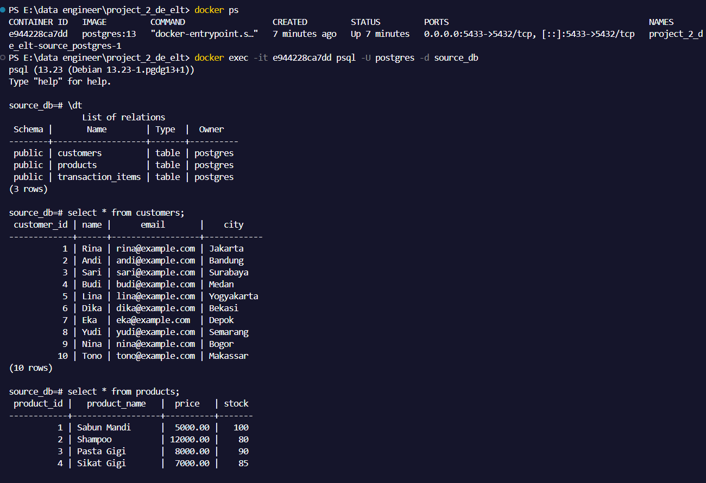
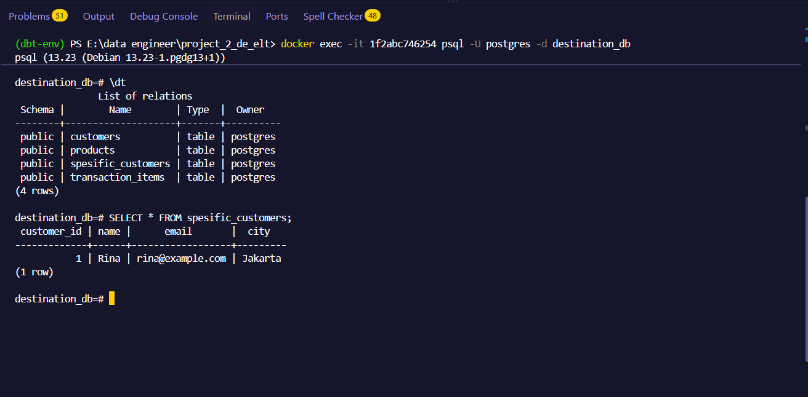
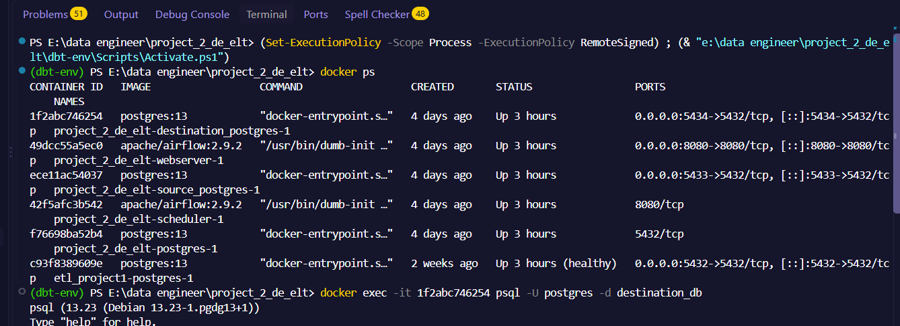
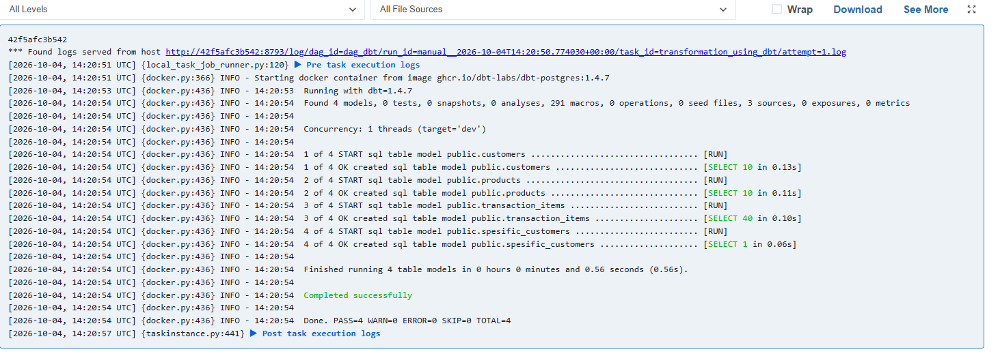
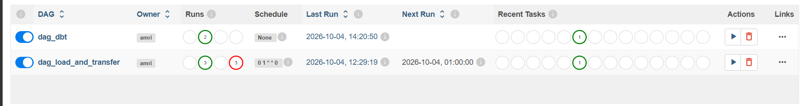
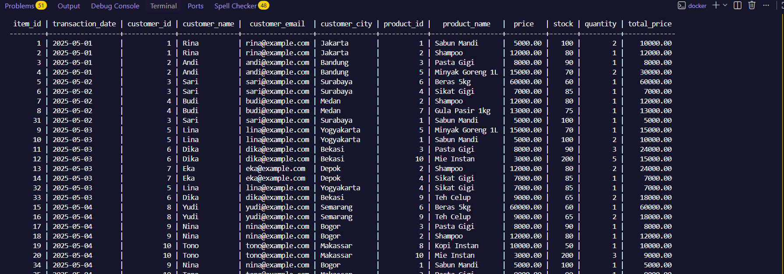
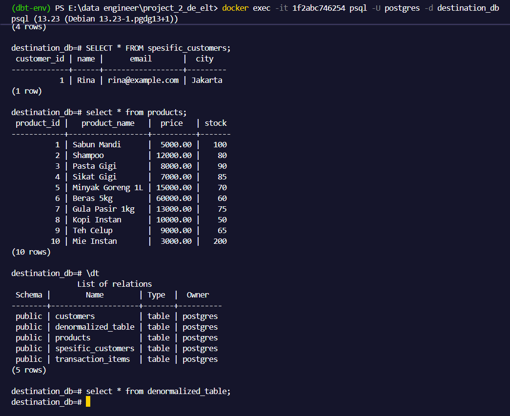
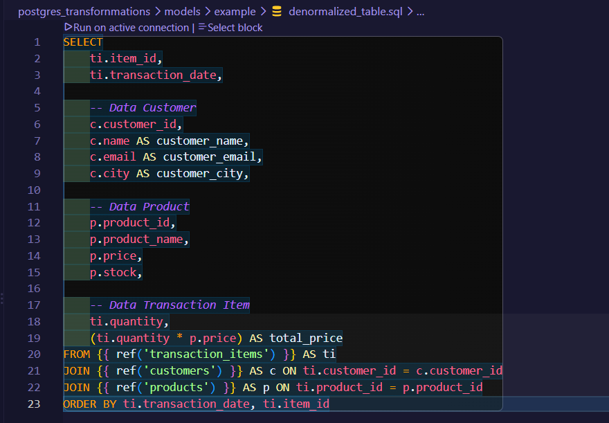
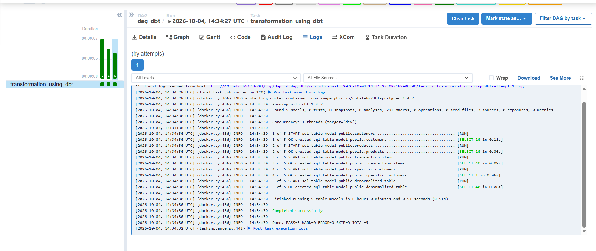

ELT Pipeline Data Engineering










Data Engineer
Python, Docker, PostgreSQL, Apache Airflow, dbt (Data Build Tool), Docker Compose
Ekstraksi Data API, Pembersihan & Transformasi Data, Orkestrasi Airflow, Manajemen State (XCom), Penyimpanan PostgreSQL, Lingkungan Kontainer Docker
Objective
Membangun sebuah data pipeline berarsitektur ELT (Extract, Load, Transform) yang sepenuhnya otomatis dan terisolasi menggunakan kontainer, guna memindahkan data transaksional dari database relasional sumber ke destination database, serta melakukan pemodelan dan pengujian kualitas data (data testing) secara terstruktur menggunakan dbt.
What
Proyek ini adalah sistem data engineering end-to-end yang mengintegrasikan beberapa teknologi utama dalam ekosistem kontainer Docker:
- Database Sumber & Tujuan: Dua kontainer PostgreSQL terpisah (
source_postgresdandestination_postgres) yang mensimulasikan lingkungan operasional nyata. - Orkestrasi Alur Kerja: Menggunakan Apache Airflow (versi 2.9.2) untuk menjadwalkan dan mengeksekusi proses pemindahan data (Load & Transfer) menggunakan skrip Python (
pg_dumpdanpsql). - Transformasi & Modeling: Menggunakan dbt (data build tool) yang dijalankan melalui
DockerOperatordi Airflow untuk mentransformasikan data mentah menjadi model analitik yang bersih dan terstruktur.
How
- Inisialisasi Lingkungan: Docker Compose menjalankan seluruh layanan penunjang secara terisolasi, termasuk database Airflow, webserver, scheduler, serta database sumber dan tujuan. Database sumber (
source_db) secara otomatis diisi dengan data awal (customers, products, transaction_items) melalui fileinit.sql. - Ekstraksi & Pemuatan (Extract & Load): DAG Airflow (
dag_load_and_transfer) menjalankan skrip Python yang memanfaatkan perintahpg_dumpuntuk mengambil seluruh isisource_db, lalu langsung memuatnya (load) kedestination_dbmenggunakan utilitaspsql. - Transformasi Data dengan dbt: DAG kedua (
dag_dbt) memicuDockerOperatoruntuk mengeksekusi kontainer dbt (dbt rundandbt test). Berdasarkan konfigurasi padaprofiles.ymldan skema model, dbt memproses data di dalam database tujuan serta memvalidasi batasan integritas datanya.
Alur Kerja dbt Model (dbt Workflow)
Setelah proses Load memindahkan data mentah secara utuh dari database sumber ke destination_db (schema public), tahap Transformasi diambil alih sepenuhnya oleh dbt (data build tool).
Alur kerja dbt model berjalan secara sistematis melalui tahapan berikut:
-
Koneksi dan Konteks Lingkungan (
profiles.yml)- Saat
DockerOperatordi Airflow memicu task dbt (dag_dbt), dbt membaca profil koneksi yang terhubung kedestination_dbmelalui hosthost.docker.internalpada port 5434. - dbt menggunakan kredensial PostgreSQL yang aman untuk mengakses database tujuan dan menentukan skema target (default schema:
public).
- Saat
-
Pembacaan Proyek & Konfigurasi Model (
dbt_project.yml& Schema Definition)- dbt memindai direktori proyek (
/dbt) dan membaca file definisi skema (schema.yml) yang berisi metadata serta aturan pengujian (tests) untuk setiap model, seperti tabelfilms,actors, danfilm_actors.
- dbt memindai direktori proyek (
-
Eksekusi Transformasi (
dbt run)- Berdasarkan perintah
--full-refresh, dbt mengeksekusi skrip pemodelan SQL secara berurutan (DAG of models). - dbt mengambil data mentah dari tabel hasil load sebelumnya, lalu melakukan transformasi struktural (seperti pembersihan kolom, penggabungan tabel (joins), agregasi, atau restrukturisasi format) untuk diubah menjadi tabel analitik yang siap dikonsumsi (downstream consumption).
- Berdasarkan perintah
-
Pengujian Kualitas Data Otomatis (
dbt test)- Setelah model berhasil dibangun (built), dbt secara otomatis menjalankan rangkaian unit tests yang telah didefinisikan di
schema.yml. - Pengujian ini memvalidasi integritas data secara ketat, contohnya:
unique: Memastikan kolom pengenal sepertifilm_iddanactor_idtidak memiliki nilai duplikat.not_null: Memastikan kolom-kolom penting sepertititle,release_date,price, danratingtidak boleh bernilai kosong (NULL).
- Jika ada baris data yang gagal dalam pengujian ini, dbt akan memberikan error log, sehingga kualitas data (data quality) tetap terjaga sebelum masuk ke tahap pelaporan/analisis.
- Setelah model berhasil dibangun (built), dbt secara otomatis menjalankan rangkaian unit tests yang telah didefinisikan di